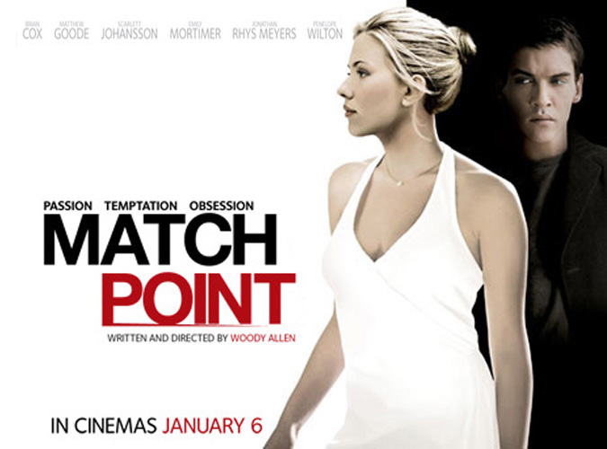
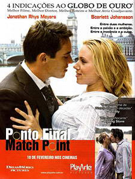
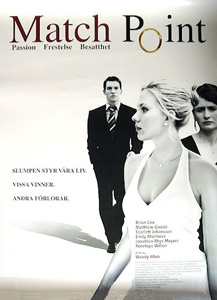
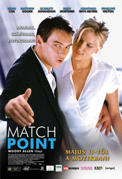
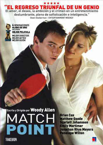
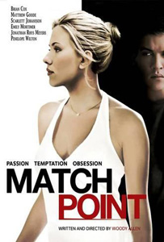
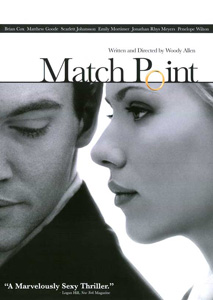

|
||||
Match Point (2005) |
||||
 |
||||
Director |
- |
Woody Allen | ||
Producers |
- |
Letty Aronson Helen Robin Stephen Tenenbaum Charles H. Joffe Jack Rollins |
||
Screenplay |
- |
Woody Allen |
||
Cinematography |
- |
Remi Adefarasin | ||
Production Designer |
- |
Jim Clay | ||
Costume Designer |
- |
Jill Taylor | ||
Editor |
- |
Alisa Lepselter | ||
Cast |
||||
Chris Wilton |
- |
Jonathan Rhys Meyers | ||
Nola Rice |
- |
Scarlett Johansson | ||
Chloe Hewett Wilton |
- |
Emily Mortimer | ||
Tom Hewett |
- |
Matthew Goode | ||
Alec Hewett |
- |
Brian Cox | ||
Eleanor Hewett |
- |
Penelope Wilton | ||
Margaret, the housekeeper |
- |
Selina Cadell | ||
Mr. Townsend |
- |
Alexander Armstrong | ||
Ping-Pong Player |
- |
Mark Gatiss | ||
Estate Agent |
- |
Paul Kaye | ||
Henry |
- |
Rupert Penry-Jones | ||
Mrs. Eastby |
- |
Margaret Tyzack | ||
John the Chauffeur |
- |
John Fortune | ||
Alan Sinclair |
- |
Geoffrey Streatfeild | ||
Heather |
- |
Miranda Raison | ||
Samantha, Chris' secretary |
- |
Zoe Telford | ||
Carol |
- |
Rose Keegan | ||
Ian |
- |
Colin Salmon | ||
Detective Parry |
- |
Steve Pemberton | ||
Inspector Dowd |
- |
Ewen Bremner | ||
Detective Mike Banner |
- |
James Nesbitt | ||
Policeman |
- |
Toby Kebbell | ||
Plot |
||||
From a humble background and with traditional values, Chris Wilton is struggling financially despite being a recently-retired high ranked tennis pro. He has taken a job as a tennis instructor at an upscale London tennis club, although he knows there is a better life for him somewhere down the road. He is befriended by one of his students, wealthy Tom Hewett. Chris starts to date Tom's sister, Chloe Hewett, a girl-next-door type who is immediately attracted to Chris. Chloe quickly knows she wants to marry Chris and through her businessman father, Alec Hewett, tries to help Chris and their future by getting him an executive job in Alec's company. In his life with the Hewetts, Chris begins to enjoy the finer things in life. Through it all however, Chris cannot help thinking about Nola Rice, a struggling American actress who he meets at the Hewett estate and who is Tom's unofficial fiancée. Nola is vivacious, and she knows the effect she has on men, including Chris. Unlike Chris, Nola is not accepted by Tom and Chloe's mother, the outspoken Eleanor Hewett. Chris has to decide if he can give up what he has been able to achieve with Chloe and the Hewetts, or if the passion he feels for Nola is stronger than the finer things in life to which he is now accustomed. He may go to any length to have his cake and eat it too. |
||||
Filming |
||||
The script was originally set in The Hamptons, a wealthy enclave in New York, but was transferred to London when Allen found financing for the film there. The film was partly funded by BBC Films, which required that he make the film in the UK with largely local cast and crew. In an interview with The Guardian, Allen explained that he was allowed "the same kind of creative liberal attitude that I'm used to", in London. He complained that the American studio system was not interested in making small films: "They only want these $100 million pictures that make $500m." A further change was required when Kate Winslet, who was supposed to play the part of Nola Rice, resigned a week before filming was scheduled to begin. Scarlett Johansson was offered the part, and accepted, but the character had to be re-written as an American. According to Allen, "It was not a problem ... It took about an hour." The film is a debate with Fyodor Dostoyevsky's Crime and Punishment, which Wilton is seen reading early on, identifying him with the anti-hero Raskolnikov. That character is a brooding loner who kills two women to prove that he is a superior being, but is racked by guilt and eventually admits all to a dogged sleuth, and he is finally redeemed by punishment, the love of a poor girl, and the discovery of God. Wilton is a brooding loner who kills a poor girl who loves him because he considers his interests superior to those around him, knows little guilt, and avoids detection through luck. Allen signals his intentions with more superficial similarities: both killers attempt to cover their crime by faking a robbery, both are almost caught by a painter's unexpected appearance in the stairwell, and both sleuths play cat and mouse with the suspect. Allen argues, unlike Dostoyevsky, that there is neither God, nor punishment, nor love to provide redemption. The theme of parody and reversal of Dostoyevsky's motifs and subject matter has been visited by Allen before, in his film Love and Death where the dialogue and scenarios parody Russian novels, particularly those by Dostoyevsky and Tolstoy, such as The Brothers Karamazov, Crime and Punishment, The Gambler, The Idiot and War and Peace. In Match Point, Allen moves the theme from parody to the more direct engagement of Dostoyevsky's motifs and narratives. Allen revisits some of the themes he had explored in Crimes and Misdemeanors (1989), such as the existence of justice in the universe. Both films feature a murder of an unwanted mistress, and "offer a depressing view on fate, fidelity, and the nature of man". Critics in the United States praised the film and its British setting, and welcomed it as a return to form for Allen. In contrast, reviewers from the United Kingdom treated Match Point less favourably, finding fault with the locations and especially the idiom of the dialogue. Allen was nominated for an Academy Award for Best Original Screenplay. |
||||
Filming Locations |
||||
- St. James's Park, St. James's, London; - Parliament View Apartments, 1 Albert Embankment, Lambeth, London (apartment of Chris and Chloe); - Covent Garden Hotel, Monmouth Street, London (hotel lobby and restaurant scenes); - Englefield House, Theale, Reading, Berkshire (Hewetts' estate); - Julie's Restaurant, 135 Portland Road, Notting Hill, London (cafe where Chris meets Nola); - Swiss Re Tower - The Gherkin, St. Mary Axe, Broadgate, London, Belgravia, London; - New Bond Street, Mayfair, London (where Chris runs into Henry outside Cartier shop); - Tate Modern, Bankside, Southwark, London; - Ealing Studios, Ealing, London; - Mount Street Gardens, Mount Street, Mayfair, London; - Queen's Club, Palliser Road, West Kensington, London (club, where Chris works as tennis coach). |
||||
Quotes |
||||
"He saw me across the room and he homed in on me like a guided missile." |
||||
Music |
||||
The film's soundtrack consists almost entirely of pre-World War I 78 rpm recordings of opera arias sung by Italian tenor Enrico Caruso. The Caruso arias are intercut with extracts from contemporary performances which the characters attend over the course of the film. Opera connoisseurs have noted that the arias and opera extracts make an ironic commentary on the actions of the characters and sometimes foreshadow developments in the movie's narrative. There are scenes at the Royal Opera House and elsewhere performed by opera singers (La Traviata performed by Janis Kelly and Alan Oke and Rigoletto performed by Mary Hegarty), accompanied by a piano (to save money). Arias and extracts include work by Verdi (Macbeth, La Traviata, Il Trovatore and Rigoletto), Donizetti's L'elisir d'amore, Bizet's Les pêcheurs de perles and Carlos Gomes' Salvatore Rosa sung by Caruso. Plus Andrew Lloyd Webber's The Woman in White is featured. |
||||
Reviews |
||||
"The change of locale from New York to London has done Woody Allen a world of good. As has oft been said, Match Point is his best movie since ... fill in the blank." - David Ansen : Newsweek "Match Point has a coiled, taut energy that's unusual for Allen." - Rene Rodriguez : Miami Herald |
||||
Additional Artwork |
||||
   |
||||
   |
||||